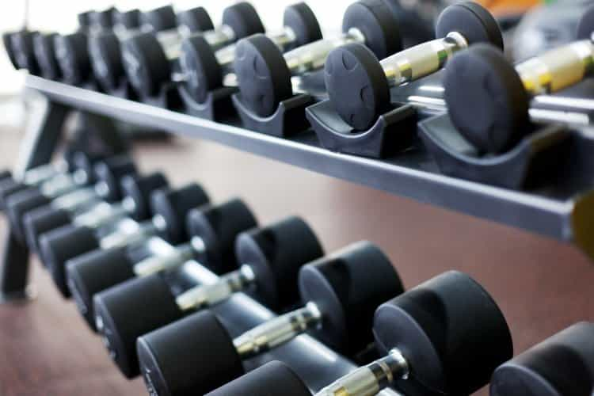

Kyle is an entrepreneur and nomad who has been living abroad since 2016. He blogs at This Is Trouble. Follow him on Facebook.


One of the most aggravating things about being on the road is not always having access to a high-quality gym. Sure, most digital nomads settle down for a month at a time in places. But what about those periods where you’re seeing several different cities over ten days?
You’ll be walking a lot, but getting to the gym consistently is naturally going to be a bit of a challenge. Here are six tips that any digital nomad or world traveler can use as a bit of a guideline to stay fit while traveling.
Let me get one thing clear: you definitely can stay leaned out while traveling if you work at it. But it’s definitely difficult to get into significantly better shape when you’re hopping all over the place.
If you go to a new country, you’re naturally going to want to try all of the new things. Beer. Hard liquor. Wine. The local delicacies. You’re not going to want to eat grilled chicken and brown rice when you’re exploring a new city or country for the first time. And don’t lie to yourself and say that you will eat those things, all the time.
So be realistic with yourself from the get-go. Understand that you can moderate and control things, but if you truly want to get in ripped it’s probably going to take settling down, cooking food at home, and having a consistent gym schedule and diet.
Don’t kid yourself and say that you can get ripped while you hop to a new country every two weeks, boozing, picking up girls, and trying new cuisines all at once. It’s just not reasonable to have it all at once—for most people. There are certain people that could accomplish this, but I’m not one of them. And I suspect your average person falls into the same boat as me with this.

Even if you’re staying in a spot for a very short amount of time, you can still get to the gym. Many places offer you a free trial. Just check all of the gym websites, and also check the local hotels. Many of them will let you go and take a trial for a day—though I don’t understand why anyone would want to work out at a hotel gym full-time.
On top of it, a lot of places will offer you a week, ten day, or two week pass. Sure, it comes at a premium—but it’s usually not more than $25-$40 in South America or Eastern Europe. I can’t imagine it’s too much more expensive in Southeast Asia, either
$25 is absolutely worth it to keep a fitness routine going. Even if you’re only there temporarily, going to the gym will resemble some normalcy of being home, which will improve your overall mood and make you more likely to be successful if your goal is to sleep with some cute foreign girls.
Every fitness guru on the planet now has online programs available in digital download format. While you’ll be constricted to bodyweight-only exercises in many cases, programs like P90X, Insanity, and more do offer a good, quick way to get a workout. They make you move at a fast pace, so if you don’t have heavy weights you’ll at least get your heart up and going.
You don’t even need to invest in an expensive program. There are hundreds of free apps that are out there on the market that do the same thing. I’ve lately been using Sworkit and it’s been a good experience overall.
Bonus: Long haul flights, lugging bags around cities, and general travel can really have an effect on your body. Try to supplement with a bit of yoga—it’s easy enough to fit a small yoga mat in a carry-on backpack. The same principles apply—use an online program or app, and help keep yourself limber. I’ve been using the Down Dog app on my iPad lately.
I’ll never understand the people who are flying in economy and rush to get on the plane before everybody else. They’re usually the people who are trying to cram their entire life into a carry-on, and then take all of the carry-on space in the plane instead of just checking the bag.
But why would you want to rush to get into the big metal tube before everybody else? So you can sit down before the rest of the passengers before you have to sit through an entire 10 hour flight? Silly.
When you’re on the road and left in limbo, make every effort to stand when possible. If you’re trying to get some work done in the airport, try to find a bar or cafe that has a table with higher stools. They can make excellent makeshift standing desks. The more time you can spend on your feet, the better you will feel overall.
The last thing you want is to be so stiff from sitting in planes and airports that you feel unable to work out once you reach your destination. Standing and walking around the airports or other transit hubs will keep the blood flowing and make you less likely to feel like a wood board.
This one is fairly obvious, but it’s worth mentioning. If you’re doing some touristic stuff, don’t take Ubers, cabs, or public transit if you can help it. You never know what you might uncover by walking to your destination. You might find a local’s watering hole or a beautiful cafe. All sorts of neat things can be found when you stop rushing and take your time to take in the sights.
So if where you’re trying to go is less than a mile or two away—do it by foot. Avoid taking the easy route by calling an Uber or walking into the metro.

I know that I mentioned in #1 that you’d be wanting to eat out. But it doesn’t mean you need to eat out every meal. Typically, breakfasts around the world are not that unique to a country’s specific cuisine, so you won’t miss much there. You should go out and see what breakfast is like—but once or twice is enough.
What I’m saying is, don’t make eating out three times a day a staple of your diet. No matter where you are in the world, it’s a challenge to eat healthy every time if you never cook.
These days, renting an apartment is very affordable. Plus, it’s often a much better experience than in a hotel. So rent an apartment and commit to cooking at least once a day. Your wallet and waistline will both thank you over the long term.
If you’re looking to improve your ability to travel and want to build a business, check out Troublesome Solutions—where I offer free consultations. Make sure to check out my niche site, Eastern European Travel, for more travel tips and tricks around Europe.
Read More: 7 Things I Learned On The Road This Year